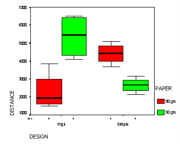

| / Home |
Keywords: Two-Way Analysis of Variance, Three-Way Analysis of Variance, Interaction, Experimental Design.
The data was collected by Stewart Fischer and David Tippetts, statistics students at the Queensland University of Technology in a subject taught by Dr Margaret Mackisack. Here is their description of the data and its collection:
The experiment decided upon was to see if by using two different designs of paper aeroplane, how far the plane would travel. In considering this, the question arose, whether different types of paper and different angles of release would have any effect on the distance travelled. Knowing that paper aeroplanes are greatly influenced by wind, we had to find a way to eliminate this factor. We decided to perform the experiment in a hallway of the University, where the effects of wind can be controlled to some extent by closing doors.
In order to make the experimental units as homogeneous as possible we allocated one person to a task, so person 1 folded and threw all planes, person 2 calculated the random order assignment, measured all the distances, checked that the angles of flight were right, and checked that the plane release was the same each time.
The factors that we considered each had two levels as follows:
Paper: A4 size, 80gms and 50gms
Design: High Performance Dual Glider, and Incredibly Simple Glider (patterns attached to original report)
Angle of release: Horizontal, or 45 degrees upward.The random order assignment was calculated using the random number function of a calculator. Each combination of factors was assigned a number from one to eight, the random numbers were generated and accordingly the order of the experiment was found.
| Variable | Description | ||
| Distance | Distance travelled in mm | ||
| Paper | 80gms = 1, 50gms = 2 | ||
| Angle | Horizontal = 1, 45 degrees = 2 | ||
| Design | High-performance = 1, Incredibly simple = 2 | ||
| Order | Order in which the runs were conducted | ||
Data file (tab-delimited text)

|
Home - About Us -
Contact Us Copyright © Gordon Smyth |